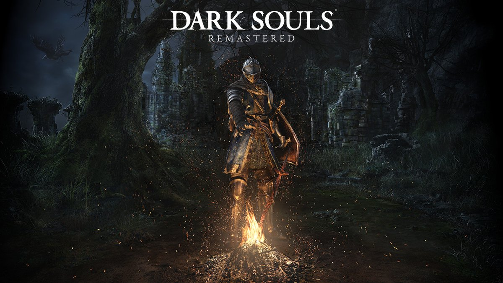

DARK SOULS REMASTERED
un remaster bastante automatico
Uno de los juegos más relevantes de la pasada generación regresa en esta en forma de remasterización, pero no exento de polémica. En este análisis de Dark Souls Remastered cuáles son la novedades de esta edición, pero también qué elementos podían haber salido mejor.
A este Dark Souls Remastered le han ocurrido demasiadas cosas por el camino como para que sea capaz de obviarlas todas. No hay duda de que me hace plantearme qué es exactamente una remasterización. Si esta debería ceñirse exclusivamente a lo técnico, limando gráficos y asperezas, o aprovechar la oportunidad para cambiar y aportar contenido. En el caso de la laureada saga de FromSoftware, el debate está abierto a múltiples interpretaciones.
En primer lugar, porque Dark Souls II tuvo ya una remasterización: Scholars of the First Sin. No sólo llevaba el juego a la nueva generación, aglutinando sus (maravillosos) DLCs, sino que aportaba una nueva serie de características, como la alteración de algunos enemigos, su localización así como algún que otro nuevo personaje. ¿Es esto lo que debería haber sido este Dark Souls: Remastered? Puede, pero muchos otros podrían argumentar que una obra tan importante como Dark Souls que en muchos aspectos ha cambiado el paradigma del videojuego moderno debe ser conservada tal y como llegó por primera vez.
En esta ocasión, por principios, por prisa o por pereza, FromSoftware ha decidido optar por esta decisión. Realmente no veo aquí tanto problema. Teniendo al propio Miyazaki como presidente, probablemente considerasen a Dark Souls un juego bastante redondo en cuanto a su contenido, mientras que Dark Souls II pudo tener más flecos que podían añadirse. Sin embargo, esto no quita que esta remasterización se me antoje bastante... Automática, a falta de una palabra mejor. Parece que el trabajo puesto en ella se ha centrado más en lo que podía mejorarse de forma mecánica que de forma artesanal. Y aunque no todos los ojos se percatan de ello, se nota.
Si venimos de la versión Prepare to Die de PC es algo más difícil recomendar esta versión, ya que muchas de las características, como la tasa de frames por segundo o las altas resoluciones nos hicieron disfrutar del juego en óptimas condiciones gracias al buen trabajo de la comunidad, y sobre todo con el DS Fix de Durante, que arregló lo que FromSoftware no quiso hacer en su momento. Dicho esto, sí se nota que la versión de PC no estaba optimizada para los ordenadores actuales, sobre todo los de ahora, no realizando un aprovechamiento de los núcleos tan ideal como sí lo hace esta remasterización, y generando ciertos cuellos de botella que podían causar parones o bajones en el frame rate.